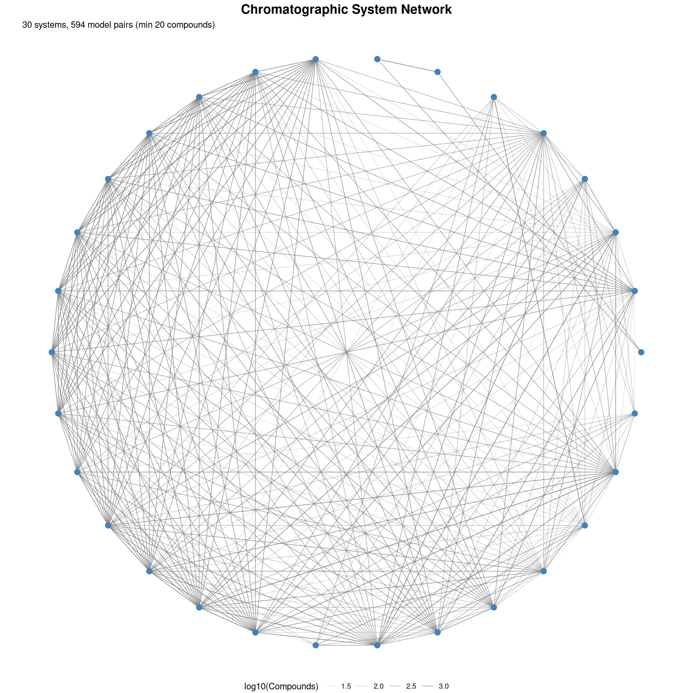
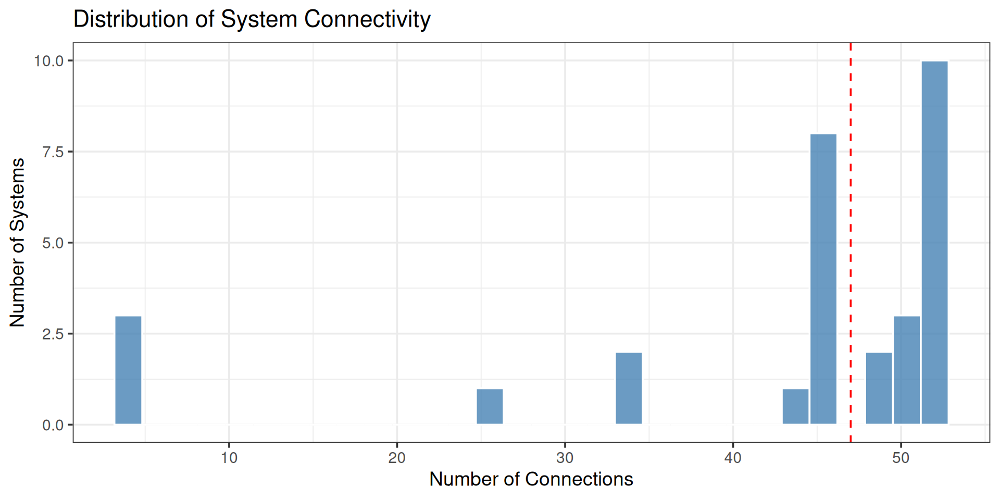
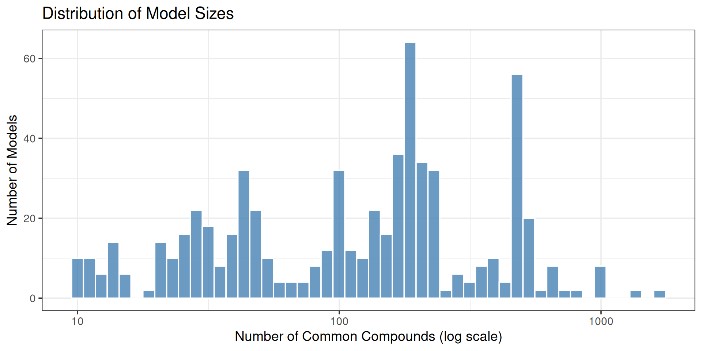

| Metric | Value |
|---|---|
| Total Systems (Nodes) | 30 |
| Total Models (Edges) | 642 |
| Average Connections per System | 42.8 |
| Network Density | 73.79% |
Network Overview
The network visualization shows how chromatographic systems are connected through pairwise models. Each node represents a system, and edges represent available models between systems.
Network Visualization (Figure 2)

Connectivity Statistics
Systems with Most Connections
| System | Outgoing | Incoming | Total |
|---|---|---|---|
| 0048 | 26 | 26 | 52 |
| 0063 | 26 | 26 | 52 |
| 0210 | 26 | 26 | 52 |
| 0262 | 26 | 26 | 52 |
| 0263 | 26 | 26 | 52 |
| 0382 | 26 | 26 | 52 |
| 0383 | 26 | 26 | 52 |
| 0391 | 26 | 26 | 52 |
| 0392 | 26 | 26 | 52 |
| 0436 | 26 | 26 | 52 |
| 0403 | 25 | 25 | 50 |
| 0415 | 25 | 25 | 50 |
| 0429 | 25 | 25 | 50 |
| 0219 | 24 | 24 | 48 |
| 0240 | 24 | 24 | 48 |
| 0236 | 23 | 23 | 46 |
| 0238 | 23 | 23 | 46 |
| 0244 | 23 | 23 | 46 |
| 0246 | 23 | 23 | 46 |
| 0248 | 23 | 23 | 46 |
Connection Distribution

Models by Compound Count

Heatmap of System Pairs
Heatmap not shown: too many models for visualization